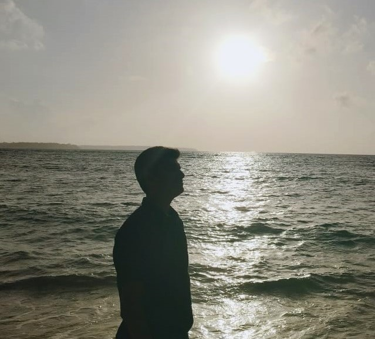

Places you must visit in port blair

LEMON TREE HOTEL
I visit this hotel frequently. I visited it last on 26/08/2023
Located at a stone’s throw distance from Veer Savarkar International Airport, Lemon Tree Hotel, Port Blair makes traveling hassle-free. We offer 48 spacious rooms to accommodate you and your loved ones. Our rooms feature modern amenities such as air-conditioner, television, and 24-hour hot and cold water service. The complimentary breakfast and exemplary room service are bound to enhance your comfort.

Blue sea hotel
I visit this place thrice in a month. food is the best part here.
The Elegant, comfortable, luxurious and Hospitality oriented Hotel, situated right in the heart of town is about 2.5 km from Veer Savarkar Airport, Port Blair, Andamans. The spacious and airy guest rooms (single and double) 56 in all, have attached bath and rest rooms. For your added comfort, they are air-conditioned, have direct dialing telephone facility and 24 hrs running water both hot and cold. Color television with satellite channels is there to take care of your entertainment.

marina park
this place is very common here.you will see people coming here everyday
Evening Walk around Marina Park is a beautiful experience.marina Park and its surroundings attract a large number of tourists and residents in the evenings and night. There are memorials, statues along the sea coast and as it gets lighted it presents a beautiful spectacle. Around Christmas, New Year and Republic Day when tourists flow to the Islands is large, the special lighting makes beautiful viewing of Marina Park and its surroundings.

netaji subhash chandra bose island
This island used to be known as ross island but it's name got changed recently
A very clean and beautiful island... lots of things to see... Although most of the buildings have collapsed but you can admire the way the island has been designed and how luxurious the life there was. Apart from that the history of Ross island or netaji subhash chandra bose island is on display and a lot of peacocks and deers to see!
havelock island
very beautiful place morelike a heaven
Famous for its beautiful sandy beaches and tropical green canopy of the rainforest, Havelock Island is one place which beckons everyone to enjoy the fun of the azure sea. Havelock Island Beach Resort Pvt.Ltd. is situated at beach no 2 Govind Nagar Beach (1 km from Havelock Harbor). Blessed with the vast diverse flora and fauna and the uninterrupted views of tropical greenery.
reviews on the following movies i watched

Excellent film to culminate MCU ride
Where to begin, where to begin! You know a movie is outstanding when the end credits alone are more epic than the majority of films released in the last 20 years! This film is the pure definition of an emotional roller coaster and throughout it's run time brings about fascination, humor, sadness, incredible excitement, and sheer finality. This is not your typical superhero movie and some viewers used to the entertaining, nonstop action style of the previous films may be disappointed, but I think that this movie brilliantly satisfies and subverts expectations. The film's storytelling is some of the best ever seen in blockbuster filmaking, combining smart writing, intimate character moments, and exceptional world building to create one of the best blockbuster stories ever. The superheroes are all brilliantly acted and well written, with Robert Downey Jr, Scarlett Johannson, and Chris Evans in particular turning in some of the most human and enduring acting preformances I have ever seen. In addition, Josh Brolin once again proves utterly breathtaking as Thanos, and he somehow feels even more intimidating and horribly insane than he was in Infinity War. Further proving that Thanos is definitely among the very best movie villains of the last century. The action is honestly some of the finest in the history of cinema. The world renowned final battle of this film is riveting, heartbreaking, awe inspiring, and exceptionally well choreographed. Never before have I been so thoroughly moved and elated while watching a battle scene in film. The film's soundtrack is also one of the best of it's kind and brilliantly complements the action. It is filled with some of the most stunning, blood pumping, and epic music themes you will EVER hear. And while the time travel elements (as with all time travel movies) are certainly questionable, as long as you don't spend a week thinking about them they most likely will not bother you. This is my favorite movie of all time (yes I do watch other movies too) and I don't think anything will ever top the experience of watching this movie opening night in the theatre. However even upon second viewings the film remains an utter blast to watch with tons of replay value due to the many eastereggs to previous films. Smart, beautiful, epic, and timeless this is a superhero masterpiece!
news about environment
-
CHANDRAYAAN 3 MAKES IT TO MOON!
The Indian Space and Research Organisation(ISRO) on Saturday said that the Pragyan Rover module of the Vikram lander has been put on a ‘sleep mode’ on Saturday. ISRO also informed that the next sunrise is expected on September 22, 2023, and hoped for a successful awakening for another set of assignments.
“The Rover completed its assignments. It is now safely parked and set into Sleep mode. APXS and LIBS payloads are turned off.
Data from these payloads is transmitted to the Earth via the Lander. Currently, the battery is fully charged. The solar panel is oriented to receive the light at the next sunrise expected on September 22, 2023.
The receiver is kept on. Hoping for a successful awakening for another set of assignments. Else, it will forever stay there as India's lunar ambassador," said ISRO. "The Pragyan rover and Vikram lander are still functional.
We are commencing the process of placing both of them into sleep mode in the next one to two days as they need to tolerate the lunar night," ISRO Chairman Somanath earlier said while delivering a congratulatory message after the successful launch of Aditya L1 sun mission from the Satish Dhawan Space Centre in Sriharikota.
The space agency's announcement came hours after its chief S Somanath said the lunar mission's rover and lander, 'Pragyaan' and 'Vikram', respectively were functioning well and they would be put to "sleep" soon to withstand the night on the Moon.
"The Rover completed its assignments. It is now safely parked and set into Sleep mode. APXS and LIBS payloads are turned off. Data from these payloads is transmitted to the Earth via the Lander," ISRO said in an update on social media platform X. -
Russia’s first moon mission in decades fails as Luna-25 crashes into lunar surface!
Luna-25 was Russia's first moon mission after 47 years and its failure points out the post-Soviet decline in its mighty space program.
Russian space agency Roscosmos has formed a special inter-departmental commission to probe the crash of Luna-25 and find out the reasons behind the failure of the moon mission.
he previous Soviet lunar lander was Luna 24, launched in 1976. Nascent plans for what became Luna 25 began in the late 1990s, with the evaluation of two spacecraft designs having taken place by 1998.
Attempts to revive and complete the project continued throughout the 2000s and were punctuated by an aborted attempt at international cooperation via a merger with JAXA's now-cancelled Lunar-A orbiter, and pressure from another attempted cooperative lunar mission with Indian Space Research Organisation (ISRO) (which continued without Russia's involvement). -
Aditya L1 update: Isro set to raise orbit of India's maiden solar mission

India's ambitious Aditya-L1 mission is set to undergo its fourth orbit-raising maneuver as it continues its journey outside the planet.
The fourth Earth Bound Maneuvre will be conducted on September 15 around 02:00 am IST.
This crucial step will propel the spacecraft closer to its ultimate destination - Lagrange point 1 (L1). The spacecraft will be placed in a halo orbit around the L1 point of the Sun-Earth system, approximately 1.5 million km from Earth.
This unique vantage point allows for continuous observation of the Sun without any eclipses or obstructions.
The upcoming fourth orbit-raising maneuver plays a pivotal role in the mission. By skillfully utilising Earth's gravitational force, Isro engineers aim to raise the spacecraft's perigee, the point in its orbit closest to Earth.
This maneuver follows the successful completion of the third orbit-raising operation conducted on September 10. The spacecraft will be placed in a halo orbit around the L1 point of the Sun-Earth system, approximately 1.5 million km from Earth. This unique vantage point allows for continuous observation of the Sun without any eclipses or obstructions.
The upcoming fourth orbit-raising maneuver plays a pivotal role in the mission. By skillfully utilising Earth's gravitational force, Isro engineers aim to raise the spacecraft's perigee, the point in its orbit closest to Earth.
This maneuver follows the successful completion of the third orbit-raising operation conducted on September 10. -
Asia Cup 2023: Can Paskistan Still Qualify To Finals?

India reached the final of the Asia Cup 2023 after a thrilling 41-run win over Sri Lanka on Tuesday.
The Rohit Sharma-led side will now face either Pakistan or Sri Lanka in the final of this year's Asia Cup.
The Asia Cup final will be held at the R Premadasa Stadium in Colombo on 17 September.In a low-scoring encounter, India were bowled out for 213 despite a solid start from openers Rohit Sharma and Shubman Gill.
In reply, Sri Lanka were restricted to 172 thanks to the spin wizardry of Kuldeep Yadav and the swinging deliveries of Jasprit Bumrah.Sri Lanka and Pakistan will meet in a virtual semi-final at the Premadasa Stadium on 14 September.
The winner of this match will take on India for the Asia Cup trophy on 17 September.Sri Lanka have made a poor start to the tournament, but the home conditions should give them an edge over Pakistan in the crucial clash.
Meanwhile, Pakistan are also battling injuries to pacers Haris Rauf and Naseem Shah, who picked up niggles against India. As a result of the injuries, Shahnawaz Dahani and Zaman Khan have been called up by the selectors for the remainder of the tournament.
My Contact Details

Aarnav Thakur
my@gmail.com
Phone: (91+) 7977696656
@aarnavthakur_2506
7977696656
books i read
BILL GATES
Reading is still the main way that I both learn things and test my understanding.
List of books

First Space Encyclopaedia
First Space Encyclopaedia
Zoom off into the galaxy and investigate all the planets, from Earth to Mars with First Space Encyclopaedia. Packed full of stunning photography, quizzes and amazing facts, children will become space experts in no time. Covering everything from observatories and rockets, to the solar system and the death of stars, children will discover all about space and space travel.
BEST BUY LINK